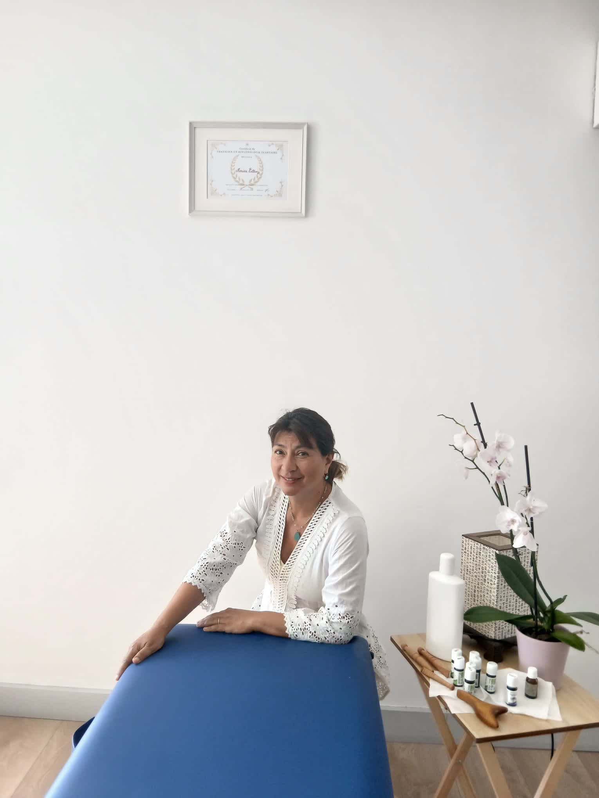

La praticienne
Passion, bienveillance et savoir-faire pour vous accompagner vers plus de douceur et d'équilibre.

Depuis toute petite, j'ai toujours eu une affinité naturelle avec le toucher et le prendre soin.
Ce qui a commencé comme une pratique personnelle et familiale, un véritable plaisir au quotidien, est aujourd'hui devenu mon métier.
Langues parlées : Français · English · Español
Pour enrichir cette sensibilité innée et vous offrir un accompagnement complet, j'ai suivi un parcours de formation structuré.
Certifiée en novembre 2025 par le Centre d'Empreinte Bien-Être à Toulon, j'utilise la réflexologie pour aider le corps à retrouver son équilibre naturel et stimuler ses capacités d'auto-guérison.
Pour moi, il ne s'agit pas d'un simple massage énergétique : c'est un travail en pleine conscience avec chaque organe, où la présence et l'intention au moment du toucher font toute la différence.
Chaque séance est unique, construite autour de votre ressenti et de vos objectifs.
Un temps d'échange pour comprendre votre quotidien, vos tensions et vos envies.
Une technique douce et structurée, adaptée à votre sensibilité et à votre rythme.
Cabinet calme, lumière tamisée, chauffe-pieds et musique douce pour une vraie déconnexion.
Des conseils personnalisés et un accompagnement régulier pour ancrer les bienfaits.
Elle ne remplace ni diagnostic, ni traitement : en cas de doute, je vous oriente vers votre médecin.
Vos échanges et votre historique restent strictement confidentiels.
Phlébites, infections cutanées, fièvre : certaines situations demandent de reporter la séance.
Chaque retour vous permet d'ajuster ma pratique et de vous offrir le meilleur.
Réservez votre créneau en ligne, puis recevez une confirmation instantanée sur WhatsApp.
Prendre rendez-vous Voir les prestations